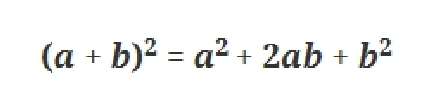
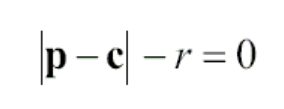
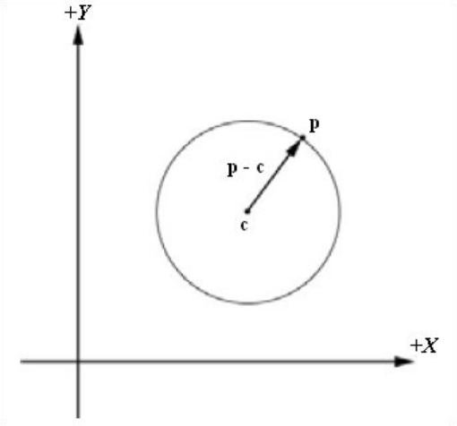

Пересечение луча и сферы
#include <windows.h>
#include <math.h>
struct Vector3
{
Vector3() {};
Vector3(float xi, float yi, float zi) : x(xi), y(yi), z(zi) {};
float x, y, z;
Vector3 operator - (Vector3 v)
{
Vector3 t;
t.x = x - v.x;
t.y = y - v.y;
t.z = z - v.z;
return t;
}
Vector3 operator + (Vector3 v)
{
Vector3 t;
t.x = x + v.x;
t.y = y + v.y;
t.z = z + v.z;
return t;
}
Vector3 operator * (float v)
{
Vector3 t;
t.x = x * v;
t.y = y * v;
t.z = z * v;
return t;
}
};
struct Sphere
{
Vector3 center;
float radius;
};
struct Ray
{
Vector3 origin;
Vector3 direction;
};
float Vec3Dot(Vector3 v1, Vector3 v2)
{
return v1.x * v2.x + v1.y * v2.y + v1.z * v2.z;
}
bool Ray_Sphere_Intersects(Ray* ray, Sphere* sphere, float *s0, float *s1)
{
Vector3 d = ray->origin - sphere->center;
float b = 2.0f * Vec3Dot(ray->direction, d);
float c = Vec3Dot(d, d) - (sphere->radius * sphere->radius);
float discriminant = (b * b) - (4.0f * c);
if( discriminant < 0.0f )
return false;
discriminant = sqrtf(discriminant);
*s0 = (-b + discriminant) / 2.0f;
*s1 = (-b - discriminant) / 2.0f;
if( *s0 >= 0.0f || *s1 >= 0.0f )
return true;
return false;
}
int main (void)
{
Sphere bs;
bs.center = Vector3(0.0f, 0.0f, 0.0f);
bs.radius = 2.0f;
Ray r;
r.direction = Vector3(1.0f, 0.0f, 0.0f);
r.origin = Vector3(-5.0f, 0.0f, 0.0f);
float s0, s1;
if( Ray_Sphere_Intersects(&r, &bs, &s0, &s1) )
{
//масштабируем вектор направления
//вектор направления должен быть нормализованый
Vector3 vOut0 = r.direction * s1;
Vector3 vOut1 = r.direction * s0;
//точка пересечения со сферой 1
Vector3 P1 = r.origin + vOut0;
//точка пересечения со сферой 2
Vector3 P2 = r.origin + vOut1;
::MessageBox(0, "Hit!", "HIT", 0);
}
return 0;
}
Для начала вспомним, как выглядит формула квадрата суммы двух выражений.

Зная центральную точку c и радиус r сферы, мы можем проверить находится ли точка p на поверхности сферы с помощью следующей простой формулы (где p — это точка на сфере).


Уравнение луча v = o + nt;
o – вектор начала луча;
n – вектор направления;
Уравнение сферы (v - c)^2 = R^2;
c – центр сферы;
R – радиус сферы;
Подставляем уравнение луча в уравнение сферы
(o + nt - c)^2 = R^2;
пусть d = o - c;
тогда
(o + nt – c) ^2 =
(nt + d)^2 =
n^2t^2 + 2ndt + d^2
Результирующее уравнение
n^2t^2 + 2ndt + d^2 - R^2 = 0;
где
A = n^2;
B = 2nd;
C = d^2 - R^2;
Если вектор n нормализован, то A = 1.
radix = sqrt(4(nd)^2 - 4(d^2 - R^2))
t1 = (-2nd + radix) / 2;
t2 = (-2nd - radix) / 2;